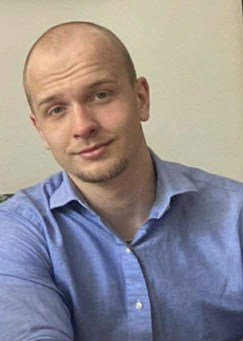
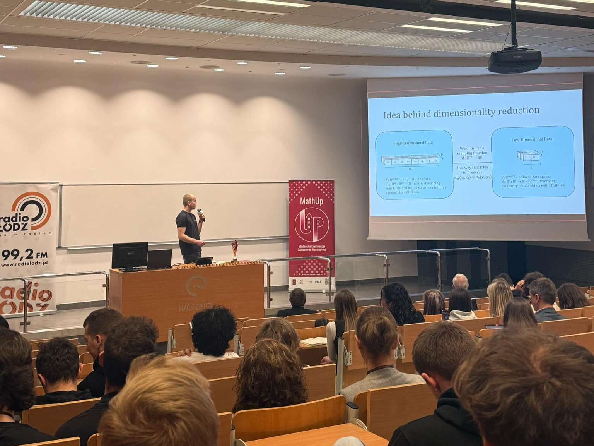
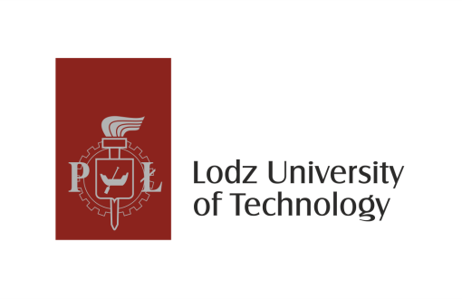

I'm a third year student pursuing a degree in Mathematical Methods in Data Analysis at Politechnika Łódzka, passionate about turning messy data into clear decisions. Currently looking for a data science internship this summer after I come back from an Erasmus exchange in late June.

Portfolio
End-to-end machine learning system that predicts NBA player salaries from on-court performance statistics. Built around a real-time data pipeline using Apache Kafka for streaming and Apache Spark for large-scale processing. Multiple ML models are trained and compared via a Flask API, with the full stack containerised in Docker.
Emotion recognition on the final statements of Texas death row inmates - a dataset with no ground truth labels. A pretrained teacher model produces soft probability distributions over 6 emotion classes, which are used to fine-tune a DistilBERT student via KL divergence loss. Compared against a frozen DistilBERT baseline trained on hard labels with cross-entropy.
Decomposition, stationarity analysis, and forecasting of two index fund indices - tracking price changes and trading volume - using ARIMA and ETS models. The pipeline covers the full workflow from raw data ingestion to model evaluation and forecast visualisation.
Two reproducible R Markdown reports exploring real-world datasets through exploratory data analysis. The first analyses trends in data science salaries across roles, experience levels, and geographies. The second examines consumer shopping behaviour patterns, uncovering seasonal and demographic signals.
Credentials
Conference Speaker
A deep dive into dimensionality reduction techniques presented at Politechnika Łódzka. Awarded top honors by the Director of the International Faculty of Engineering.
Watch on YouTube →
Scholarship
Recognized for maintaining a high GPA and contributing to the university's academic community at Politechnika Łódzka.

Athletic Achievement
Competed in rugby for 11 years, including selection for the national team and participation in national leagues at semi-professional level. Built experience in high-pressure, team-based environments requiring discipline, rapid decision-making, and long-term consistency. The picture depicts me winning a lineout during a match in 2020, where my team secured promotion to the second highest division of polish rugby, 3 years later securing a promotion to the higest level of play. I retired from rugby in 2023 to focus on my academic development.
I'm currently seeking a data science / machine learning internship where I can apply statistical modeling, build production-ready pipelines, and work on meaningful problems.
If your team is hiring or working on something interesting, I’d be glad to connect.